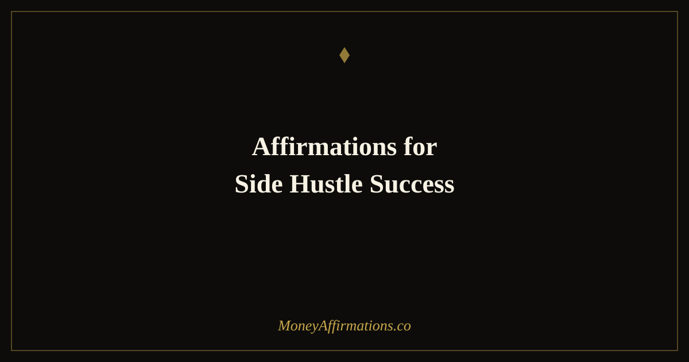

50 Affirmations for Side Hustle Success to Build Income Outside Your Day Job

Building a side hustle while holding down a full-time job is one of the most psychologically demanding things a person can do with their time. It is not just the physical demand of working extra hours — it is the emotional weight of operating in two completely different identities simultaneously. In your day job, you have a title, a salary, and a track record. In your side hustle, you are a beginner again, uncertain of your offer, unsure who your customers are, and watching a revenue number that refuses to move as fast as you need it to.
These 50 affirmations are written specifically for this in-between phase. They address the unique challenges of building something on the side: the time scarcity, the identity tension, the slow early growth, the temptation to quit before the compounding begins. They are organized as a journey from starting, through finding clients, into consistent income, through the hardest middle phase, and out toward the scaling that makes the whole effort worth it.
Side hustles fail most often not from lack of skill, but from lack of consistent belief in the early stages when results are invisible. These affirmations are written for the in-between phase — when you are building something real but the numbers are not yet proving it.
What are affirmations for side hustle success?
Affirmations for side hustle success are present-tense declarations that sustain the mindset required to build a second income stream through the long, uncertain early phase. Unlike entrepreneur affirmations — which address the experience of running a full business — side hustle affirmations target the specific challenges of dual-income building: the guilt of splitting attention, the difficulty of showing up for something that is not yet paying you what your time is worth, and the internal conflict of asking people to pay for something you are still gaining confidence in. They work by creating a consistent internal narrative of progress and capability during the phase when external results are not yet reinforcing that story. Without that internal narrative, the side hustle dies in the gap between starting and seeing results.
50 side hustle success affirmations
Starting your side hustle — the beginning matters
- I have started, and starting is the most important thing. Everything builds from here.
- My idea has value and there are real people in the world who need what I am creating.
- I give myself full permission to build this, even while my day job pays the bills.
- Every hour I invest in this side hustle is an hour invested in my financial future.
- I release the need to have everything figured out before I begin. I learn by doing.
- I am building something real, and the fact that it is small right now does not diminish its potential.
- I am worthy of multiple income streams, and I am actively creating them.
- The discomfort of starting something new is a sign I am growing, not failing.
- I commit to this side hustle with the same professionalism I bring to my job.
- I am patient with the beginning because I know what is being built beneath the surface.
Getting your first clients or customers
- The right clients and customers are looking for exactly what I offer, and they find me easily.
- I put my work in front of people with confidence because I believe in what I am offering.
- My first sale — or my first client — is already on its way to me.
- I reach out, I show up, I make offers — and I do not make rejection mean more than it does.
- Every "no" I receive is pointing me toward the people who will say yes.
- I price my work at a level that reflects its real value, and I hold that price with confidence.
- I am becoming known in my niche and people are beginning to see me as the go-to person I am.
- My first customer results create a ripple of referrals and social proof that builds my reputation.
- I show up consistently in the places where my ideal customers spend their time.
- Getting clients is a skill I am developing, and I get better at it with every genuine interaction.
Building consistent income alongside your day job
- My side hustle income grows steadily and predictably alongside my salary.
- I manage my time between my job and my business with clarity and without guilt.
- I protect my side hustle hours the way I protect any other important commitment.
- Money from my side hustle is real income and I treat it with the same respect as my paycheck.
- My business systems are improving, which means I produce more in the same amount of time.
- I celebrate every payment, every client, every sale — because each one proves the concept works.
- My day job funds my life while my side hustle funds my freedom, and both have their place right now.
- I am building financial resilience through multiple income streams and that is a powerful thing.
- Each month my side hustle earns a little more than the month before, and that trajectory is everything.
- I am proof that it is possible to build something meaningful in the hours outside a full-time job.
When side hustle and job pull in opposite directions
- I hold both identities — employee and entrepreneur — without needing to collapse one for the other.
- When I feel stretched thin, I remember that this season is temporary and worth every hour.
- I make choices about my time from my values, not from guilt or other people's expectations.
- The tension I feel between two worlds is a sign that I am building toward a future of more choice, not less.
- I rest when I need to rest so I can show up fully for both my job and my business.
- I do not need to apologize for having ambitions that extend beyond my salary.
- I release comparison with people who build full-time. My path is mine and my timing is right.
- On the hard days I remember why I started, and that reason is strong enough to keep going.
- I am managing this dual life better than I give myself credit for, and I acknowledge that.
- I trust the process even when progress feels invisible. The compound effect is working below the surface.
Scaling toward your income goal
- My side hustle is scaling because I have built real value that the market recognizes and rewards.
- I raise my prices as my results and reputation grow, and my clients accept these increases easily.
- I am building the systems that allow this business to grow beyond what I can do alone.
- My income goal is specific, believable, and getting closer with every consistent action I take.
- I attract opportunities, collaborations, and clients that accelerate my growth.
- I am building toward a moment of genuine financial choice — and that moment is coming faster than I expect.
- The skills I have developed in this side hustle are making me more valuable in every area of my professional life.
- I think about this business with long-term vision, not just short-term hustle.
- I am proud of how far I have already come, and deeply excited about where I am going.
- My side hustle is becoming a business, and I am becoming the person who runs it well.
How to use these affirmations
The most effective practice for side hustle affirmations is to use them immediately before your side hustle work sessions — not as a replacement for action, but as a warm-up for it. Open your list, read through the group that most matches your current stage, and then begin working. This creates a consistent mental transition ritual between "employee mode" and "entrepreneur mode," which is one of the biggest invisible challenges of building on the side.
The fourth group — for when the two worlds pull against each other — is worth reading any time you feel guilty about working on your side hustle instead of resting, or resentful about your day job taking time away from your business. These are the internal conflicts that silently erode commitment, and they respond well to deliberate reframing.
Consider keeping a short income log alongside your affirmation practice — even a simple monthly note of your side hustle revenue. Seeing the number grow, even slowly, gives your affirmations a feedback loop of real-world evidence. Belief and evidence reinforce each other when you are paying attention to both.
The dual-identity challenge of side hustles — and how consistent belief bridges the gap
Role conflict theory in organizational psychology describes what happens when a person holds two professional identities with competing demands on time, energy, and self-concept. Side hustlers live this every day. The employee identity is defined by reliability, compliance, being responsive to others' needs. The entrepreneur identity demands the opposite: self-direction, tolerance for uncertainty, comfort with promoting oneself, and the willingness to make decisions without approval. Toggling between these two modes multiple times a day is cognitively and emotionally expensive, which is why so many side hustles collapse — not from a bad idea, but from the psychological cost of sustaining two selves.
Research on consistency by Morris and Feldman confirms that in complex, uncertain environments — like the early stage of building a business — consistent behavioral patterns produce better outcomes than motivation-driven bursts. This means showing up for your side hustle for a scheduled hour on a Tuesday evening when you do not feel like it is more valuable than an inspired six-hour Saturday session that does not become a habit.
James Clear's concept of the "valley of disappointment" captures the experience of every early-stage side hustler precisely. Growth is compounding, but the early stages of any compounding process look entirely flat. You are doing the work, building the systems, making the offers — and the results appear to be zero. This is the phase in which most people quit, because the gap between their expectation and their experience is widest. Sustained belief during this phase is not wishful thinking; it is the functional prerequisite for reaching the inflection point where visible growth begins.
Amabile and Kramer's research on the "progress principle" is also directly relevant. They found that perceived progress — even small wins — had a disproportionate positive effect on motivation and persistence. Side hustle affirmations accelerate this by training you to recognize and register small wins that your brain might otherwise overlook.
Tips to make them work faster
- Pre-session ritual: Read two or three affirmations in the sixty seconds before every side hustle work session. The transition from employee to entrepreneur identity is smoothed by any consistent ritual, and this one takes almost no time.
- Track micro-progress: Alongside your affirmations, keep a simple log of side hustle actions — not just results. "Sent three pitches," "published one piece of content," "had one sales call" — these reinforce the belief that you are an active builder even when revenue has not caught up.
- Income celebration rule: Every single time money comes in from your side hustle, pause and acknowledge it — read at least one affirmation from the scaling group. Training your brain to celebrate each instance of being paid reinforces your identity as someone whose business earns money.
- Weekly review anchor: On Sunday evenings, spend five minutes reviewing the past week in your side hustle and read through the relevant group of affirmations as a frame for the week ahead. This keeps the business alive in your mental landscape even during heavy day-job weeks.
- Hard days protocol: When you are about to quit — and that moment will come — read the entire fourth group before making any decision. Give yourself 48 hours after reading them before acting on the impulse to stop. Most people who follow this protocol do not quit.
Frequently asked questions
How do I find time for a side hustle affirmation practice?
You do not need a long session. Two minutes before you start working on your side hustle — reading two or three affirmations from the relevant group — is enough to shift your mental state before you begin. Pair it with a consistent cue like opening your laptop for side hustle work, and the habit builds itself into your existing routine.
What if my side hustle is making no money yet?
The early stage of zero income is where most side hustles die — not from a lack of skill, but from a lack of sustained belief before results arrive. The affirmations in the first and second groups are written specifically for this phase. They reinforce that invisible progress is still real progress, and that the action of building is itself meaningful regardless of what the revenue dashboard shows.
When should a side hustle become a full-time business?
A useful rule of thumb is to transition when your side hustle income consistently covers your monthly expenses for three to six months, and when growth is being limited by the time you can give it alongside your day job. The decision is both financial and psychological — the affirmations in the final group are designed to help you build toward that moment with intention rather than making a fear-driven leap too early or too late.
Building a side hustle is ultimately about expanding your relationship with earning and financial possibility. Our full money affirmations collection provides the broader foundation of money mindset support that every income builder needs — from abundance thinking to financial identity to the deep belief that you are capable of creating more than one income stream.